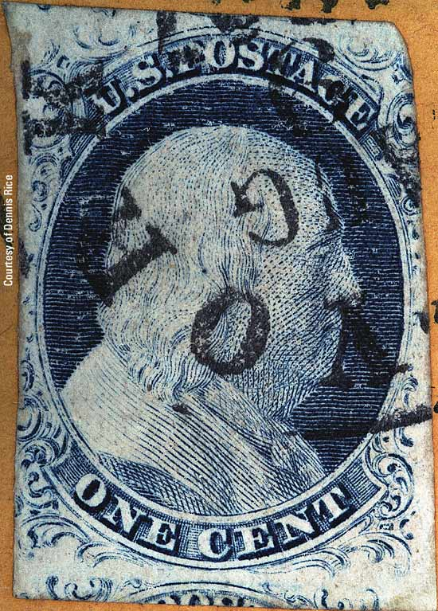

| 1¢ Franklin Issue of 1851-1857, PLATE 1 LATE.
Pos 52L1L, (Scott #9) |
| Scott #9 Blue, Type IV, Relief A Issued both imperforate and perforated. Perforated copies are more scarce. DOUBLE RECUT TOP There are two positions on Plate 1L that are recut twice at the top and twice at bottom. These are: 52L1L and 79L1L. Both positions are "A" Reliefs. This recutting was probably not by accident as "A" reliefs on the transfer roll already had a shorter and weaker design at top and bottom than the "T" and "B" reliefs. |
|  |
| Figure 1. (BELOW). Detail view of TOP DOUBLE RECUT LINES (Red Arrows) . |
| Figure 2. (BELOW). Detail view of BOTTOM DOUBLE RECUT LINES (Red Arrows). |
| MY STANDARD DISCLAIMER: Thanks for visiting this site. I hope you learn something new as I am really having fun doing this. You, the visitor, have my permission to link to my pages and to share the link paths with others. I only ask in return that you send me an e-mail if I have made a mistake, or have done some other technical blunder that in my rush to put these pages up would cause the visitor confusion. Please also visit my other website at www.slingshotvenus.com. and support the live music arts. While your there, be sure to purchase our music. There are not many philatelic rock stars around and we need all the help we can get. :-) I can be reached at: nerdman@ix.netcom.com |